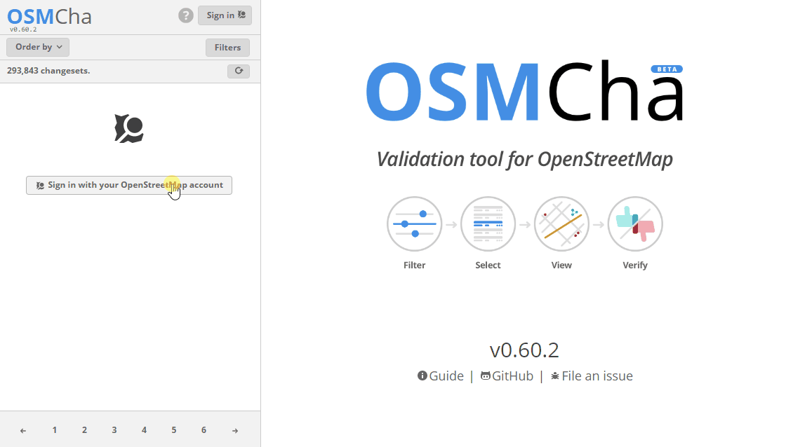
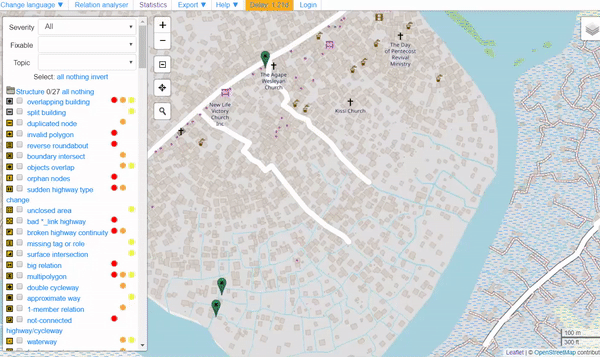

5.2 Quality Assurance and Quality Control Tools
This section provides:
- An overview of Quality Assurance tools, including presentation slides
- Guidance on when, why, and how to use each tool
- Brief overviews and step-by-step guides on using each tool
Overview
Quality Assurance and Quality Control is the process by which mappers, and OpenStreetMap contributors in general, check data to ensure that all information uploaded to OSM meets high standards for usage and to prevent vandalism. As OpenStreetMap is a free and open platform that anyone can use and edit, it is critical to the sustainability of open data and OSM that everyone participates in the quality assurance and quality control process – from field data collection to data cleaning to long-term maintenance of existing OSM data.
While Quality Assurance and Quality Control should be performed at all stages of a mapping project, the following tools will help ensure that data uploaded to OpenStreetMap meets high quality standards.

Choosing a Quality Assurance Tool
Which quality assurance tool should I use?
The following are Quality Assurance tools commonly used in the HOT workflow. A detailed overview of these and other QA tools can be found at the Quality Assurance Tools Wiki. Different tools check for different errors and issues. Use the following table to decide when and why each tool should be used.
| I want to check for… | MapCampaigner | OSMCha | Osmose | JOSM Validator |
|---|---|---|---|---|
| Attribute completeness | ✔ | × | × | × |
| Potential vandalism | × | ✔ | × | × |
| Contributions and upload issues by indivdual user | × | ✔ | × | × |
| Tagging issues | × | × | ✔ | ✔ |
| Geometry issues | × | × | ✔ | ✔ |
MapCampaigner
MapCampaigner is a tool developed by HOT to monitor attribute completeness for predefined areas of interest (AOI). Based on your data model, the tool checks and highlights any map features that are missing pre-defined tags within your AOI, and allows team validators to download and fix those features.
Skills and Technology Needed
- Computer with
- Internet connection
- Recommended: computer mouse
How to use MapCampaigner
To navigate an existing campaign:
- Navigate to https://campaigns.hotosm.org in the Google Chrome or Mozilla Firefox internet browser.
- Select one of the Projects in the landing page or use the search bar to look for a particular project. Note: You may need to change the status menu from “Active” to “All” projects if you are not finding a project.
- Once a project is selected, scroll down to the feature details. Change the feature type by selecting a feature from the drop-down menu on the left.
- For each feature type, the percent of features with 100% completeness will be shown on the left panel.
- On the map, features are colored by the percent of attributes completed. Select each feature to view the existing tags and missing attributes.

To create a new campaign:
Follow the instructions under the resources tab found here: https://campaigns.hotosm.org/resources
OSMCha
OSMCha, or the OpenStreetMap Changeset Analyzer, is a tool designed to review uploads and changes to OSM data, largely to prevent vandalism and bad edits made to map data. This tool allows users to filter by username, location, dates of upload, and other metadata features. OSMCha is useful for monitoring the progress of data cleaning and upload teams.
Skills and Technology Needed
- Computer with
- Internet connection
- OpenStreetMap Account
- Recommended: computer mouse
How to use OSMCha
- Navigate to https://osmcha.mapbox.com in the Google Chrome or Mozilla Firefox internet browser.
- To use OSMCha, you will need to sign in with your OpenStreetMap account and grant permission. 
Once logged in, a left-hand panel will appear with changesets. Each changeset shows:
- OSM username
- Time of upload
- Changeset comment
- Changeset ID
- Flags (if any) - such as “Possible Import”
- Number of ways added (highlighted in green), ways modified (highighted in yellow), and ways deleted (highlighted in red)

With OSMCha, you can create highly focused filters to monitor you and your team’s contribution to OSM. Clicking on ‘Filters’ on the left-hand panel will open the Filters menu.
In this menu, unique filters can be applied such as OSM username, date range, locations.

Practice creating a filter
- Click ‘Filters’ on the left-hand panel.
- Set filters for:
- Start Date: 01/01/19
- Your username
- A location
- One additional filter
- Click apply.
- Click on any of the changesets that appear on the left-hand panel. Do any changesets have flags or warnings?
- Click on ‘Filters’ again to modify and/or add more filters.
- To Save a Filter for later use, click on ‘Filters’ on the left-hand panel. In the upper-right, click ‘Save’ to choose a name for this Filter.
- The exact filter can now be accessed using the URL or in the ‘My Saved Filters’ option after clicking on your username.
Osmose
Osmose is a tool that monitors multiple quality control issues in OSM. These include issues with feature geometry (such as overlapping buildings/nodes, incomplete features, and duplications), and also common tagging issues (such as missing, unsuitable or poorly formatted tags). More information about Osmose can be found at the Osmose OSM Wiki Page.
Note: to properly use this tool and view errors, you will need to use the Google Chrome internet browser. Firefox, Opera, Safari, and other browsers may not display the information correctly.
How to use Osmose
- Navigate to http://osmose.openstreetmap.fr in the Google Chrome internet browser.
- Use the zoom, pan, and search features on the map to navigate to your area of interest.
- Use the left panel to toggle common issues on and off.
- Identified issues will appear in the map as pins matching the icons from the issues panel. Click on each pin to learn more about the object and associated issue(s).

To fix issues identified in Osmose
- Open JOSM on your computer.
- In Osmose, locate the ‘Export’ button at the top of the page. Click ‘Export’, then ‘JOSM’.
- Fix the issues identified then re-upload to OSM.
JOSM Validation Tool
JOSM ‘s built-in validation tool that checks for common errors and inconsistencies in OSM data relating to both geometry and tagging.
How to use the JOSM Validation Tool
- In JOSM, download data for your AOI.
- Open the Validation Results tool. If the Validation Results tool is not activated, select ‘Windows’ from the top menu and select ‘Validation Results’.
- In the Validation Results tool, click ‘Validation’.
- Go through each warning/error produced. Note: some warnings can be disregarded, some can be automatically fixed by clicking the ‘Fix’ button, and others will have to be manually fixed. For more information on specific warnings and errors, read the Validator wiki.
- Re-run the validation tool to confirm warnings/errors have been fixed.
- Once all warnings/errors have been fixed, re-upload to OSM.

For further details on using the JOSM Validation Tool, review Section 3.5 Validation with JOSM
Resources and Training Materials
This section features a selection of resources targeted at project managers, trainers, or even self-learners on the topic(s) outlined above.
 The following presentation(s) can be used to lead a training or workshop.
The following presentation(s) can be used to lead a training or workshop.